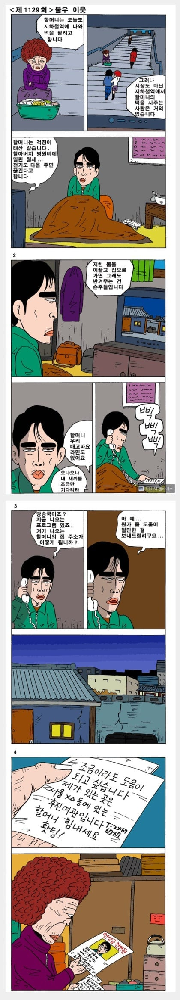

착한 나쁜놈
댓글
그거까지가 템플릿임
옛날에 저렇게 개인정보 받아서 후원 받은 돈 노리면서 난리 난 사례가 많았음
터미네이터 영화보면 그 마을에 사는 사람 이르이랑 전화번화 다 나왓있음
그래서 터미네이터가 마을의 사라코너 4명을 순서대로 찾아가서 죽였지
옜날엔 개인정보라는게 중요한가? 라는 인식이 컸지
우리나라도 옛날 전화번호부 보면 이름 주소 전화번호 다 나와있었음 ....
전화번호부에 사람들 주소랑 번호가 적혀있던 때도 있었음ㅋㅋㅋㅋㅋ
잡지에 연예인 주민등록번호 다 써두던 시절도 있다ㅋㅋ
https://namu.wiki/w/산골%20소녀%20영자%20사건
그래서 이런일 생김
겨울이다 춥다, 세금으로 빵빵하게 운영하는 교도소 입성 `~

??
도대체 몇년전 만화여 이게 ㄷㄷㄷ
방송국에서 개인정보 그냥 알려주네